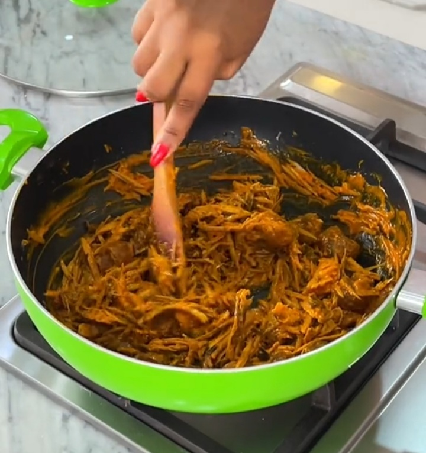

How to Prepare Nkwobi Delicacy
This is the method to prepare Nkwobi Delicacy in harmony.
Ingredients
- Cow leg
- Palm oil
- Utazi leaf
- Potash
- Maggi
- Fresh pepper
- Crayfish
- Salt to taste
Steps
- Boil your cowleg in a pressure pot (if you have one)it cooks faster with only water
till it is soft and cooked.
- Then pour palm oil into a mortar, add your grinded potash (if it is not grinded,
you can soak it in water, then use the water).
- Mix until it is thick then add grinded fresh pepper, crayfish, maggi, salt.
- Mix all and taste the sauce to make sure there is enough salt and pepper to your taste.
- Then add the well cooked soft cowleg, mix with the sauce then add utazi leaf